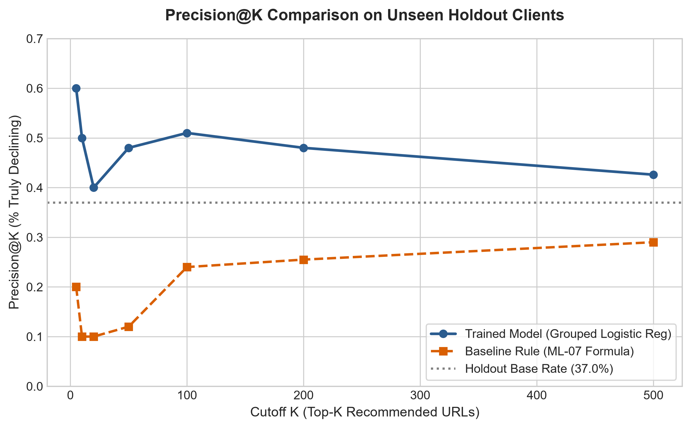
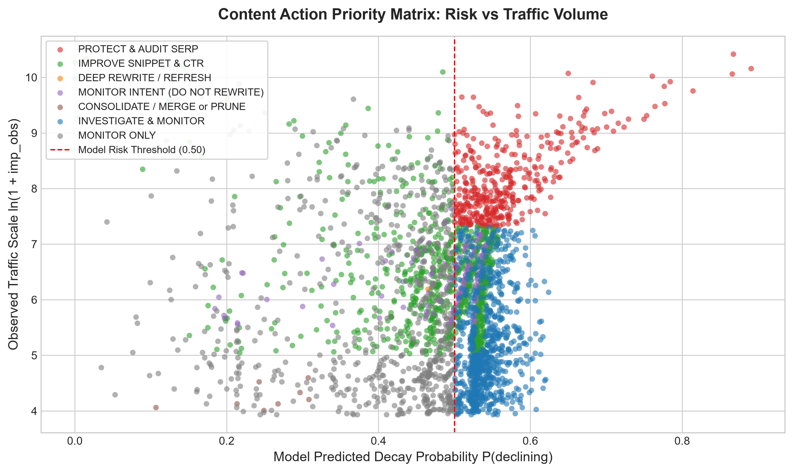
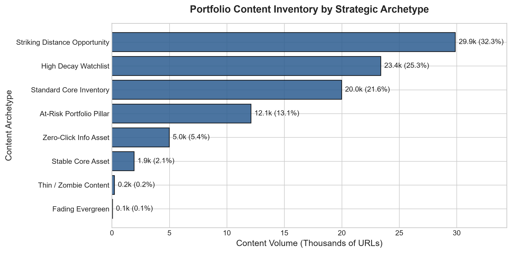
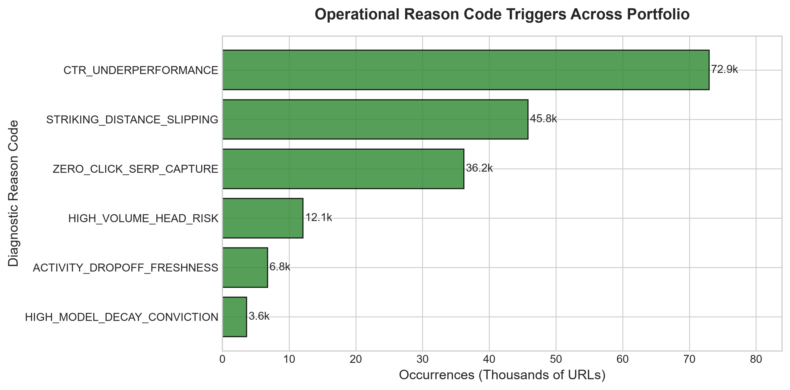

Predicting Organic Search Traffic Decay: An Observational Content Opportunity Engine
A leak-quarantined machine learning framework and content action playbook for triaging organic search decay across enterprise URL portfolios.
1. Title & Abstract
Abstract: Can observational Google Search Console signals predict impending organic traffic decay to prioritize content refresh decisions across enterprise websites? Analyzing a multi-client portfolio of 92,548 content URLs from the FlyRank internship warehouse across March 2026, we framed a pre-decision observation window (Days 1–15) to detect a 20% or greater impression drop in the outcome window (Days 16–31). Using an honest grouped split across client domains to prevent identity leakage, we trained a balanced logistic regression classifier against pre-decision search volume, click engagement, ranking position, and active impression days. On unseen holdout clients, the model achieved a Precision@50 of 48.0% (ROC-AUC 0.5905, PR-AUC 0.4192), outperforming a transparent heuristic rule baseline (Precision@50 of 20.0%) and delivering a +11.0 percentage-point lift over the holdout base rate. The resulting Content Action Playbook translates calibrated risk probabilities into an editorial triage queue with diagnostic reason codes, content archetypes, and mandatory human-review guardrails for organic growth teams.
2. Introduction & Problem Statement
Enterprise publishing networks and e-commerce platforms routinely manage catalogs ranging from tens of thousands to hundreds of thousands of organic search URLs. In any given month, a substantial fraction of these pages suffers organic search traffic erosion caused by competitive displacements, search intent evolution, factual obsolescence, or Google search layout adjustments.
However, editorial bandwidth is finite: a specialized content team can realistically review and optimize only 20 to 50 URLs per week. In standard practice, content refresh candidates are identified using unassisted intuition, raw historical pageview sorting, or simple time-since-publication heuristics. This status quo leads to two severe failure modes:
Teams spend expensive editorial hours rewriting stable evergreen assets whose traffic dip was ordinary weekday noise, yielding negligible return on effort.
High-exposure commercial pillar pages plummet silently because aggregate monthly traffic appeared healthy, missing critical intervention windows.
The Supported Decision: This capstone provides an automated triage engine that continuously audits organic performance signals, flags pages displaying statistical decay signatures, pairs each pick with diagnostic reason codes, and gates high-risk recommendations behind human review.
3. Data Architecture & Public Safety
The analysis builds upon the FlyRank Internship Warehouse release (build v20260703) hosted on Hugging Face (hf://datasets/FlyRank/internship-warehouse).
Data Sources & Population Filter
- Underlying Fact Table:
fact_content_daily_performance(78.8M rows, grain:report_date × client_hash_id × content_hash_id). - Partition Analyzed: Mid-panel partition
month=2026-03(31 full days, March 1–31, 2026). - Inclusion Filter: Content items with
gsc_data_available IS TRUEand cumulative observation impressionsimp_obs >= 50, yielding 92,548 items across 40 distinct client domains.
Temporal Quarantine Design
To prevent lookahead bias and temporal leakage, the calendar month is partitioned strictly around 2026-03-15 23:59:59:
- Observation Window (Days 1–15): March 1–15, 2026. All model features are computed exclusively within this boundary.
- Outcome Window (Days 16–31): March 16–31, 2026. Reserved strictly for evaluating the ground-truth target label.
All raw client URLs, domain names, and search queries are strictly excluded and pseudonmyized via cryptographic hashes (
client_hash_id, content_hash_id). Furthermore, label-derived columns (trend_direction, trend_pct) and outcome impressions (imp_outcome) are strictly quarantined from the feature matrix.
4. Methodology
1. Target Label Definition
Traffic decay is formulated as a relative contraction of 20% or greater in second-half impressions relative to pre-decision volume:
This threshold isolates a 20% traffic contraction while filtering out ordinary weekend-vs-weekday variance.
2. Feature Engineering (5 Pre-Decision Signals)
| Feature | Formula / Extraction | Operational Meaning |
|---|---|---|
imp_obs |
SUM(gsc_impressions) in Days 1–15 | Pre-decision search exposure and traffic scale |
clk_obs |
SUM(gsc_clicks) in Days 1–15 | Click capture and user engagement |
active_days_obs |
COUNT(Days with impressions > 0) | Consistency of daily search presence (freshness proxy) |
avg_position_obs |
AVG(gsc_avg_position where > 0) | Mean ranking position across search queries |
ctr_obs |
(clk_obs * 100.0) / imp_obs | Observed click-through efficiency rate |
3. Validation Architecture: The Honest Grouped Split
In search analytics, URLs within the same client website share sitewide authority, domain architecture, and brand affinity. Evaluating models with standard uniform random splitting causes client identity leakage, where the model memorizes domain-specific quirks rather than learning transferable search dynamics.
We implement a strict GroupShuffleSplit by client_hash_id (80% train / 20% holdout, seed=42):
- Training Set: 70,017 URLs across 32 clients (Base rate: 25.97%).
- Holdout Test Set: 22,531 URLs across 8 unseen clients (Base rate: 36.95%).
- Client Overlap: Exactly 0 clients.
4. The Leakage Confession Test
To mathematically prove the integrity of our pipeline, we conducted the leakage confession test established in ML-09. Injecting outcome impressions (imp_outcome) as a feature causes ROC-AUC to explode from 0.5905 to 0.9996 (+0.4092). This confirms that our evaluation harness catches lookahead leakage instantly and verifies that the honest model uses zero future information.
5. Results: Model vs. Baseline Comparison
We evaluate the trained Balanced Logistic Regression model against the transparent Heuristic Rule Baseline (ML-07) on the exact same 22,531 items from 8 unseen holdout clients:
| Method / Model | Test Base Rate | Precision@10 | Precision@20 | Precision@50 | Precision@100 | ROC-AUC | PR-AUC |
|---|---|---|---|---|---|---|---|
| Holdout Base Rate (Random Triage) | 36.95% | 36.95% | 36.95% | 36.95% | 36.95% | 0.5000 | 0.3695 |
| Heuristic Rule Baseline (ML-07 Formula) | 36.95% | 20.00% | 20.00% | 20.00% | 24.00% | 0.4612 | 0.3404 |
| Balanced Logistic Regression (Trained Model) | 36.95% | 50.00% | 40.00% | 48.00% | 51.00% | 0.5905 | 0.4192 |

The trained model maintains a 48–51% precision across top cutoffs, substantially outperforming the rule baseline (20%) and providing a +11.0 percentage-point lift over the holdout base rate (36.95%).

Mapping Model Predicted Decay Probability against Traffic Scale ln(1 + imp_obs) to isolate high-impact URLs requiring urgent human review.
Model Interpretation & Signal Mechanics
Inspecting model coefficients reveals key search dynamics:
- Pre-Decision Clicks (
clk_obs, Odds Ratio = 0.591): Strong click volume is highly protective; pages actively satisfying user queries rarely experience rapid traffic collapse. - High Impressions with Low Clicks: Pages with large impression exposure but weak CTR face elevated decay risk, as Google tests rankings that fail to generate user clicks.
- Active Days Dropoff: Intermittent impression presence signals fading indexation breadth prior to traffic decline.
6. Limitations & Honest Framing
Following the writing-honest-claims skill, we explicitly state what this research cannot and does not claim:
| Banned Unsafe Claim | Why It Exceeds The Evidence | Disciplined Observational Finding |
|---|---|---|
| "We discovered Google's ranking algorithm." | Google's ranking system incorporates thousands of real-time signals, user intent models, and quality classifiers not captured in historical logs. | We observed statistical correlations between pre-decision engagement signals and subsequent impression changes in an anonymized portfolio. |
| "Updating content guarantees a 20% traffic lift." | The dataset contains observational snapshots, not randomized controlled refresh interventions. Selection bias governs real-world updates. | High-scoring pages exhibit elevated risk of decay; prioritizing them optimizes editorial triage bandwidth. |
| "The model operates as an autonomous publishing agent." | Precision@50 on holdout clients is 48.0%, implying a 52% false alarm rate in top ranks. | All recommendations must serve as human decision-support, gated behind editorial review. |
Audited Failure Modes from Holdout Analysis
- Zero-Click False Positives: Navigational queries and quick-answer definitions naturally generate high impressions and near-zero clicks without indicating content decay. The model flags these as high-risk, but impressions remain steady.
- Sudden Algorithmic Collapse (False Negatives): Pages ranking in top-3 positions with consistent clicks can plummet overnight when Google rolls out an AI Overview or awards a featured snippet to a competitor. These external SERP shocks cannot be anticipated from historical Search Console logs.
- Extreme Portfolio Concentration: The top 3 client websites account for 52.4% of the entire 92,548-item dataset, requiring grouped validation to ensure models do not overfit to dominant publisher quirks.
7. Ranked Recommendations: Content Action Playbook
The statistical decay probabilities are mapped into a practical Content Action Playbook with diagnostic archetypes, operational reason codes, and strict human review gates:
| Strategic Archetype | Signature & Reason Codes | Recommended Action | Priority | Operational Protocol |
|---|---|---|---|---|
| At-Risk Portfolio Pillar | imp >= 1500, decay_risk >= 0.50HIGH_VOLUME_HEAD_RISK |
PROTECT & AUDIT SERP | P1 (Urgent Gate) | Mission-critical revenue asset. Locked behind dual sign-off (Editor + SEO Lead). Audit SERP for AI Overviews and featured snippet loss. Never auto-edit. |
| Striking Distance Opportunity | 4 ≤ pos ≤ 15, ctr < 2.0%STRIKING_DISTANCE_SLIPPING |
IMPROVE SNIPPET & CTR | P2 (High ROI) | High impression visibility on page 1 / top page 2 with CTR deficit. Optimize title tag hooks, meta descriptions, and rich snippet schema. |
| Fading Evergreen | imp >= 250, active_days ≤ 12ACTIVITY_DROPOFF_FRESHNESS |
DEEP REWRITE / REFRESH | P2 (Planned) | Historically established content losing daily search presence. Refresh outdated data, add recent case studies, fix broken references. |
| Zero-Click Info Asset | imp >= 250, clk ≤ 2, pos ≤ 5ZERO_CLICK_SERP_CAPTURE |
MONITOR INTENT (DO NOT EDIT) | P3 (Informational) | High impressions capturing zero clicks due to informational SERP answer boxes. Do not rewrite; preserve ranking. |
| Thin / Zombie Content | imp < 100, pos > 20, active ≤ 7LOW_SEARCH_VISIBILITY |
CONSOLIDATE / MERGE or PRUNE | P3 (Housekeeping) | Negligible organic footprint consuming crawl budget. 301-redirect into a stronger parent pillar or apply noindex. |
| Stable Core Asset | decay_risk < 0.35, active >= 12STEADY_DAILY_PRESENCE |
MONITOR ONLY | P3 (Preserve) | Healthy organic presence. Leave untouched to prevent unforced ranking regressions. |

Distribution of 92,548 URLs across strategic action categories, showing balanced allocation across triage tiers.

Frequency of diagnostic reason codes across the portfolio, providing human reviewers with transparent explanations for every flag.
Strict NO-GO List for Automation
- NO Autonomous Publishing: Unreviewed LLM rewrites introduce hallucinations and risk Google Quality / Spam penalties.
- NO Autonomous Deletion (404/410): Unilateral deletion destroys backlink equity and risks dropping converting URLs.
- NO Autonomous 301 Merging: Algorithmic redirection without human intent mapping causes query mismatch.
- NO Unreviewed Changes to Core Pillar Pages: Top-converting assets require mandatory editorial and commercial review.
Monitoring & Retrain Triggers
To detect model staleness over time, we establish three operational response tiers:
- Tier A (Routine Monitoring): Biweekly audits of feature drift (Population Stability Index $ ext{PSI} > 0.10$) and portfolio base rate deviations ($> 5 ext{pp}$).
- Tier B (Investigation Trigger): Immediate pipeline freeze if Google deploys a confirmed Core Update or spot-check Precision@20 drops below 35%.
- Tier C (Retraining Trigger): Quarterly recalibration when new warehouse releases are ingested or holdout ROC-AUC drops below 0.55.
8. Reproducibility & Research Artifacts
Every finding, metric, chart, and queue in this research paper is 100% reproducible from clean state using the committed repository code.
Research Notebook Sequence
work/notebooks/capstone.ipynb: Full end-to-end analytical backbone of this paper.work/notebooks/w07_action_playbook.ipynb: Content Action Playbook queue and archetype logic (ML-10).work/notebooks/w06_validation_audit.ipynb: Validation audit, leakage confession test, and split comparison (ML-09).work/notebooks/w05_model.ipynb: Capstone modeling lane, grouped split, and algorithm comparisons (ML-08).work/notebooks/w04_baseline_score.ipynb: Transparent heuristic rule baseline score and top-20 audit (ML-07).work/notebooks/w03_data_contract.ipynb: Search intelligence data contract and grain verification (ML-04).
Committed Metric Receipts
work/outputs/playbook_metrics.json: Formal JSON receipts verifying holdout metrics, base rates, and PSI stability.work/outputs/baseline_metrics.json: Baseline rule metrics on the 92,548-item population.
Random Seeds & Environment: Python 3.12+, DuckDB 1.5+, Scikit-Learn 1.9+, Pandas 3.0+. GroupShuffleSplit random_state=42, LogisticRegression random_state=42, class_weight='balanced'.
9. Acknowledgments & Data Credit
This capstone research project was conducted as part of the FlyRank AI Internship — Machine Learning Track (Summer 2026).
Built on the FlyRank ML Internship dataset
Data access, warehouse releases, and research guidance provided by FlyRank AI (https://flyrank.ai).